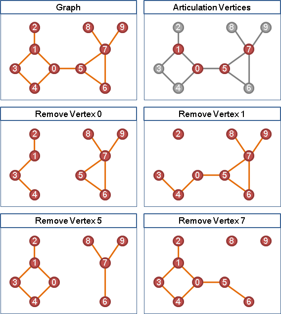
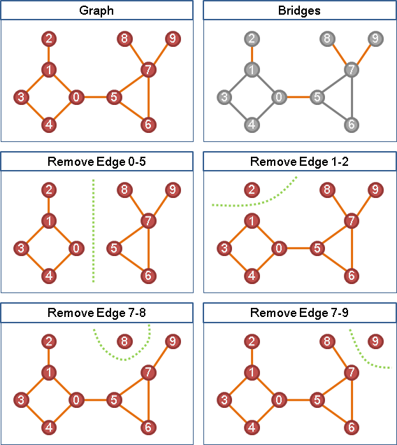
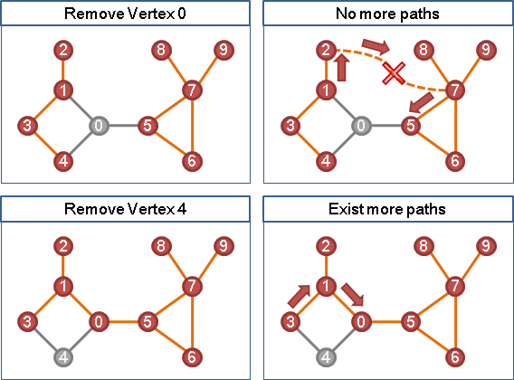
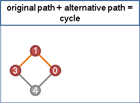
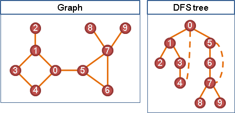
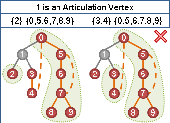
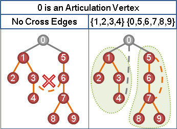

Articulation Vertex（Articulation Point）（Cut-vertex）
Articulation乃「關節」之意，骨骼與骨骼銜接的地方就是關節。關節一旦被拆開，肢體之間的連繫就被切斷了。
「關節點」是讓一張無向圖維持連通，不可或缺的點。只要從一張無向圖上移除了關節點（以及與之相連的邊），就會讓這張圖分離成更多部分，呈現不連通的狀態。

Bridge（Cut-edge）
中文稱作「橋」。只要從一張無向圖上移除了橋，就會讓這張圖分離成更多部分，呈現不連通的狀態。

尋找一張無向圖上所有的Articulation Vertex
要判斷一個點是不是關節點，只要從圖上移除此點，再看看圖是否連通就好了；要判斷連通，可以使用任何一種Graph Traversal演算法。
每一個點都用一次Graph Traversal來判斷是不是關節點，逐一試驗圖上每一個點，總共執行V次的Graph Traversal就可以找出全部的關節點了。V為圖上的點數。
這個演算法簡單易懂又容易實做，只不過這個演算法還不夠漂亮。下面要介紹更妙的方法。
原本路線＋替代路線＝環
移除一個點之後，經過該點的路線被截斷了。要是沒有替代路線，無法繞過該點，就會不連通，該點就形成關節點。反過來說，如果有替代路線，該點就不會形成關節點。

原本路線和替代路線，併在一起看，又可以想做是一個環。這也就是說：找到了環，就找到了替代路線，可以繞過關節點；找不到環，就找不到替代路線，繞不過關節點。

要在一張圖上找替代路線不太直覺，但是找環就比較直覺了──把圖重新畫成樹的形狀，就容易找環了！要把圖重新畫成樹的形狀，利用Graph Traversal就行了。這裡就利用一下DFS tree吧！

利用DFS tree尋找Articulation Vertex
任取樹上的一個點，當這個點的祖先與每一棵子樹想要互通有無，利用tree edge的話，顯然會經過此點；另一方面，不想利用tree edge的話，不想經過此點的話，就必須利用back edge了。
在DFS tree之中，子樹與子樹之間不會有邊，所以只需要考慮祖先與子樹之間有沒有back edge。
這也就是說，祖先與每一棵子樹之間都有back edge的話，該點就不是關節點；祖先與其中一棵子樹之間缺少back edge的話，該點就是關節點。

樹根沒有辦法直接套用上述規則，因為樹根沒有祖先。然而樹根更加容易判斷是不是關節點。
如果樹根的各棵子樹想要互通有無，除了通過樹根之外，決不會有替代路線。所以，若樹根有兩棵以上的子樹，或者說樹根有兩個以上的小孩，則樹根一定是關節點。

實作時，要判斷祖先與子孫，可以運用DFS的遍歷順序。
尋找一張無向圖上所有的Articulation Vertex
上方的程式碼中，如果讓grand[]改為存入遍歷順序值，而不是點的編號，那麼程式碼可以再縮短一點點。
也可以改為在DFS結束之後，再來判斷關節點。程式碼切割成兩階段，比較清爽。
UVa 315 10199
尋找一張無向圖上所有的Bridge
方法類似於尋找關節點，所以不再覆述。
一張無向圖，就算有關節點，也不一定有橋。例如兩個環接觸於一點，該點便是關節點，但是沒有任何一條邊是橋。
UVa 796 610